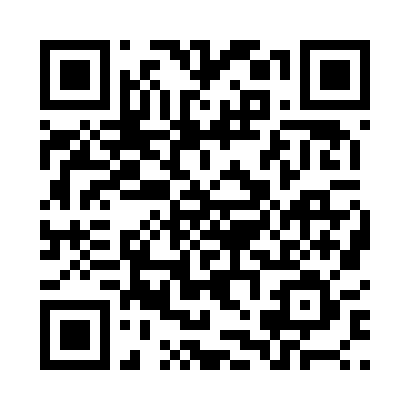

1. Scan with your phone camera

Same WiFi as the server PC required
3. Install
Open the downloaded file → allow Install unknown apps if asked → Install → open LeaveMS → confirm server address → log in.
Debug build for internal use. Server (npm start) must be running and reachable.